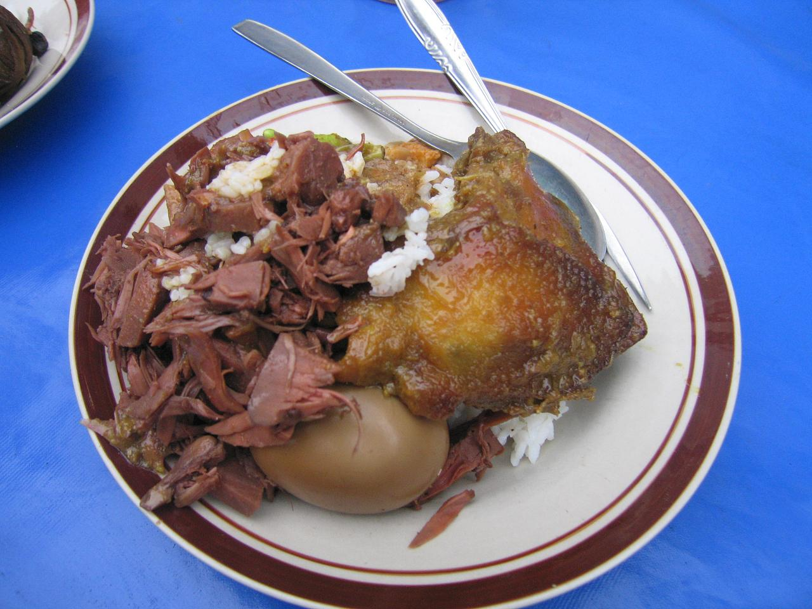

Kuliner Khas Yogyakarta
Mengenal cita rasa, sejarah, dan berbagai macam sajian Gudeg khas Yogyakarta.
Lihat MenuTentang Kuliner Nusantara

Gudeg merupakan salah satu makanan khas yang sangat identik dengan Yogyakarta. Makanan ini berbahan dasar nangka muda yang dimasak dengan berbagai bumbu dan santan hingga menghasilkan rasa yang khas.
Gudeg biasanya disajikan bersama nasi, telur, ayam, tahu, tempe, dan sambal krecek. Perpaduan rasa manis, gurih, dan pedas menjadi ciri khas hidangan ini.
Nangka muda yang dimasak dengan bumbu khas dan santan.
Telur, ayam, tahu, tempe dan sambal krecek menjadi pelengkap Gudeg.
Gudeg menjadi salah satu kuliner yang sangat dikenal dari Yogyakarta.
Cerita Kuliner
Gudeg telah menjadi bagian dari kehidupan kuliner masyarakat Yogyakarta sejak lama. Proses memasak nangka muda dengan santan dan berbagai bumbu menghasilkan cita rasa yang khas.
Seiring perkembangan zaman, Gudeg memiliki berbagai variasi penyajian. Ada Gudeg basah, Gudeg kering, Gudeg dengan ayam, telur, tahu, tempe, hingga sambal krecek.
Saat ini Gudeg dapat ditemukan di berbagai tempat di Yogyakarta dan menjadi salah satu kuliner yang sering dicari oleh wisatawan.
Pertanyaan Umum
Gudeg adalah makanan khas Yogyakarta yang dibuat dari nangka muda dan dimasak dengan bumbu khas.
Gudeg biasanya dapat disajikan bersama nasi, telur, ayam, tahu, tempe, dan sambal krecek.
Gudeg dikenal memiliki rasa manis, gurih, dan dapat dipadukan dengan sambal krecek yang pedas.
Gudeg telah lama menjadi salah satu kuliner yang dikenal sebagai makanan khas Yogyakarta.
Pendapat Pengunjung